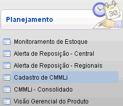
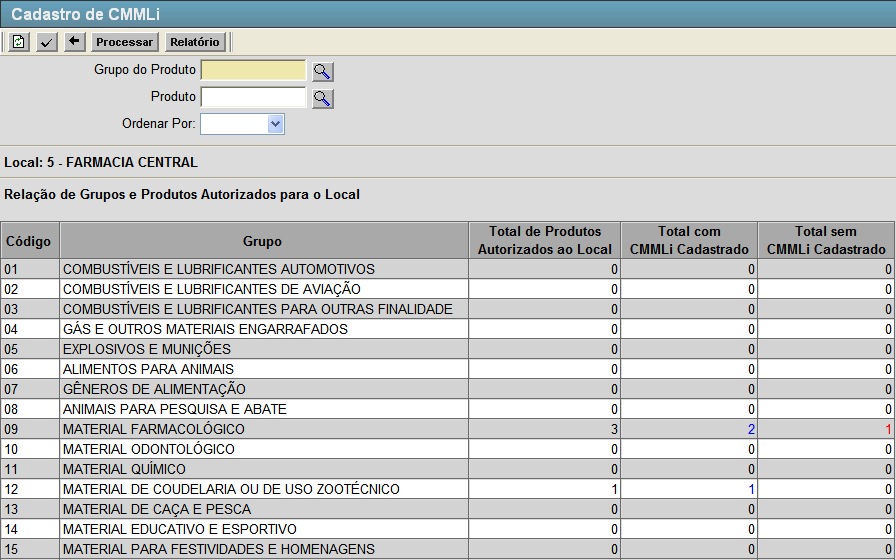
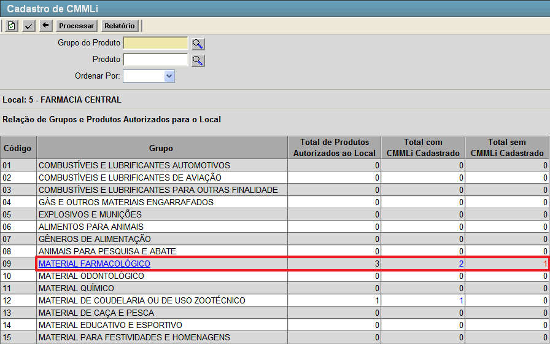
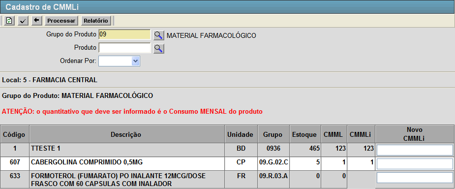
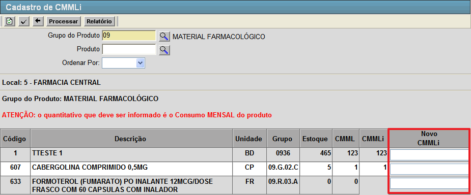

Cadastro de CMMLi [ Voltar ]Esta tela permite o usuário cadastrar informações do Consumo Médio Mensal. O formulário "Cadastro de CMMLi" encontra-se dentro do menu "Programação - Planejamento".
Ao clicar no formulário, o sistema exibirá a seguinte tela: 
Esta tela possui algumas informações importantes. São elas:
1º
Passo: configure os filtros da tela para localizar o grupo dos produtos
desejado ou selecione com um clique por meio da listagem que aparece na
tela.
 será
direcionado para a tela de cadastro de CMMLi. será
direcionado para a tela de cadastro de CMMLi.
Ao selecionar o grupo você será redirecionado para a tela abaixo. 
Nesta tela o usuário efetiva o cadastramento do novo CMMLi, nela são apresentadas algumas informações importantes sobre os produtos do grupo selecionado, como o Código, Descrição, Unidade, Grupo, Estoque, CMML e o CMMLi atual. 2º
Passo: informe o novo CMMLi para cada produto desejado. No campo ilustrado abaixo.
 Após informar no campo o novo Consumo Médio Mensal informado, clique no botão  [Processar] para salvar as novas informações adicionadas. [Processar] para salvar as novas informações adicionadas. |
 [Pesquisar]
para selecioná-lo a partir de uma listagem contendo todos os grupos de
produtos cadastrados.
[Pesquisar]
para selecioná-lo a partir de uma listagem contendo todos os grupos de
produtos cadastrados.